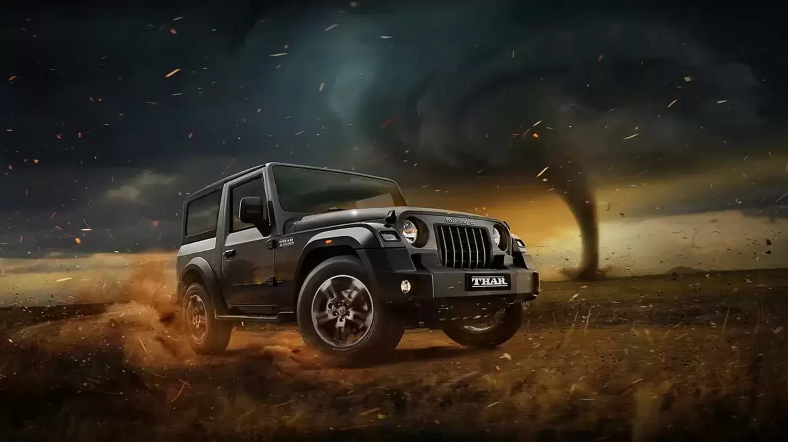
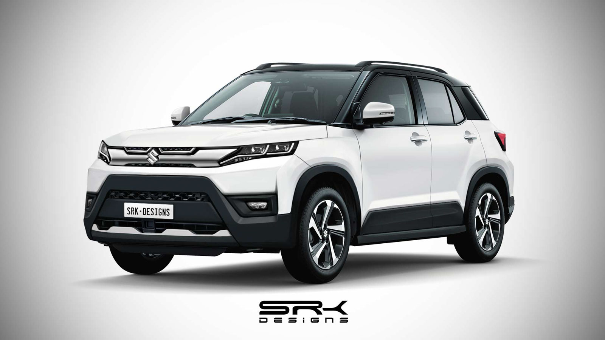

all forthuner

toyta forthuner
The first generation Fortuner was unveiled in December 2004
at the Thailand International Motor Expo and
was available for sale in early 2005. I
Specialised variants with a naturally-aspirated 5L-E diesel engine is offered to governments,
organisations
and the UN
model no 11
passing 2012
700000500000 /-

Thar4/4
The Mahindra Thar has 2 Diesel Engine and 1 Petrol Engine on offer.
The Diesel engine is 2184 cc and 1497
cc while the Petrol engine is 1997 cc .
The Thar is a 4 seater 4 cylinder car and has length of 3985mm,
width of 1855mm and a wheelbase of 2450mm.
model no 10
passing 2008
800000500000 /-

brizza forthuner
Prepare for city adventures with advanced and
exciting technology of Hot and Techy Brezza.
Advanced K-Series Dual jet and Dual VVT Petrol
Engine with Progressive Smart Hybrid Tech. Next Gen Suzuki
Connect. Head Up Display.
model no 15
passing 2013
18000015999 /K
go to home page